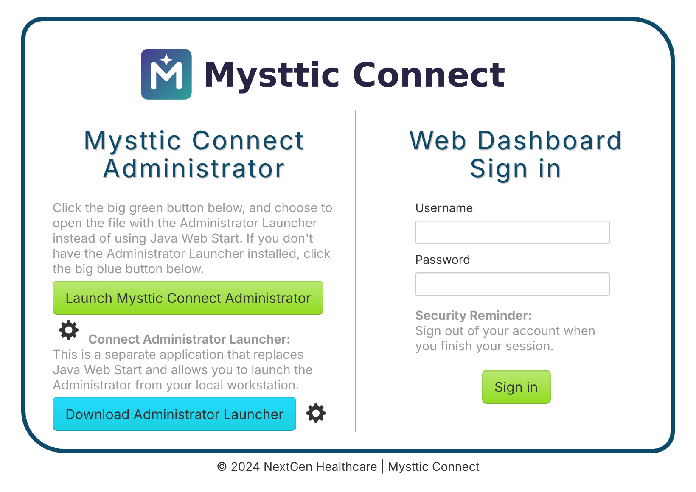

An integration engine for HL7, X12, DICOM, XML and JSON, FHIR over HTTP included. It is built from the open-source Mirth Connect 4.5.2 code the way the official release was built: the engine is the same, the name and the start scripts are its own.
Copy your Mirth Connect 4.5.2 configuration over, start it, and your channels run as they did before.

Latest release: checking…
A .tar.gz with the Mysttic Connect folder:
mcserver to run the server, mcservice to run it
as a service, mccommand and mcmanager.
A .zip with the same folder: mcserver.bat to run
the server, install-service.bat to register it as the
“Mysttic Connect Service”.
The complete source of this version, Mozilla Public License 2.0. Its
tools/mysttic/build scripts build the two packages above.
SHA-256 of the three files above, to check a copy that reached a server through several hands.
Download checksumsSource code of older versions: every version, on GitHub. The packages carry no Java: install a 64-bit Java 8 or newer first (the official Mirth Connect Docker image runs on Java 17). The Administrator's jars are signed with a public build key, not a code-signing certificate, so the NextGen Administrator Launcher refuses them with its default settings: allow untrusted signatures in it, but do not trust that key permanently, since anyone can sign with it. The interface is in English.
An engine for your Mirth Connect 4.5.2 channels, built from the same code and compared with the official release file by file, with every difference explained.
The Mirth Connect 4.5.2 source code, changed only where it shows the product name and where it finds its two configuration files (new names, the old ones still work). The engine version stays 4.5.2, so extensions made for 4.5.2 load as they are, and the database schema is the one Mirth Connect uses.
The same Java 8 compiler and Ant version as NextGen's official build. Every file of the Linux and macOS package is compared with the official 4.5.2 release, and every difference is accounted for: the name, the signatures, the build timestamps and the start scripts, which are our own in place of the install4j launchers.
99 integration cases run on the official Mirth 4.5.2 and on Mysttic Connect side by side: the same ACKs, responses, files, database rows and e-mails. The only differences are the product name in texts, the default User-Agent and the default alert subject.
Same channels, code templates, configuration map, users, REST API,
X-Mirth-* headers and JavaScript API. Nothing to export or
import: the installation takes over Mirth's files and database.
A conf/mirth.properties copied from Mirth Connect is used
in place of the default conf/mysttic.properties, and the
log says so. Rename it when it suits you.
Mozilla Public License 2.0, like Mirth Connect. Every version comes with its complete source code, and older versions keep theirs.
Four steps on the server Mirth runs on. Keep the old folder until the new installation has run for a while.
On Windows stop the “Mirth Connect Service” and set it to start manually: both services use the same ports, and after a reboot both would start.
Unpack the package next to the old installation. It creates the
Mysttic Connect folder.
conf/mirth.properties, the whole appdata folder
without temp (it holds the keystore, the server id, the
configuration map and, with Derby, the database), custom-lib,
your own extensions, and whatever you changed among the
.vmoptions, conf/dbdrivers.xml,
conf/log4j2.properties and
conf/mirth-cli-config.properties.
Run mcserver. As a service: on Windows run
install-service.bat /start as Administrator; on Linux and
macOS point the service you had at the mcservice script.
Remove the old service once the new one runs.
The engine behaves exactly like Mirth Connect 4.5.2, its bugs and the known vulnerabilities of its libraries included. Run it inside your network, not on the internet.
Instead of the install4j .exe launchers there are
mcserver.bat, mccommand.bat and
mcmanager.bat, and the service is Apache Commons Daemon
(mcservice.exe). The Windows package has been tested
under Wine, not yet on Windows itself.
The image that replaces the official Mirth Connect one is not public. The packages above are the way to install from this page.
The Administrator, Server Manager, CLI and web pages; the files
conf/mysttic.properties and logs/mysttic.log;
the Windows service; the default User-Agent of the HTTP
Sender and the default subject of alert e-mails.
Everything channels, data and partners depend on: the
com.mirth classes, the JavaScript API, MIRTH
in automatic ACKs, the REST paths, the mirthdb database and
the mirth-*.jar file names.